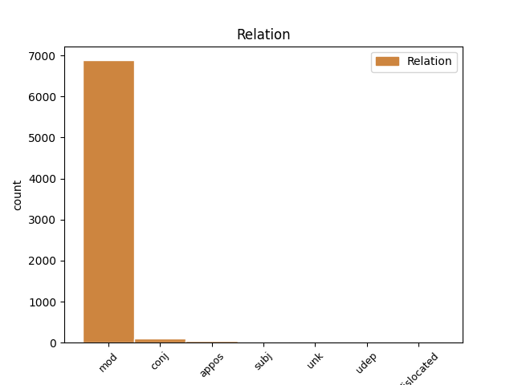
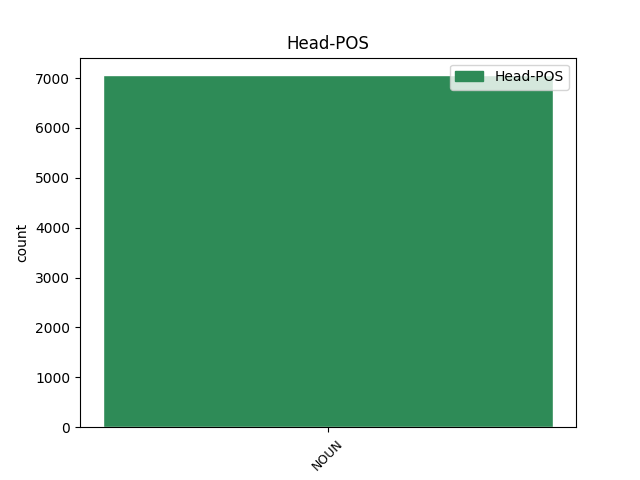
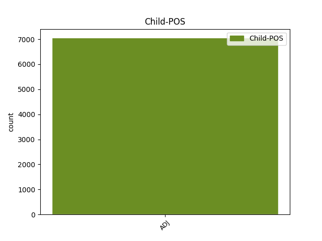

Distribution of features within this leaf



Agreement Rules sorted by frequency.
- When the dependent token is the modifer(mod) of the head token, and the head token is NOUN and the dependent token is ADJ.
1 Obiurgationes _ _ _ _ 0 _ _ _
2 etiam _ _ _ _ 0 _ _ _
3 non _ _ _ _ 0 _ _ _
4 numquam _ _ _ _ 0 _ _ _
5 incidunt _ _ _ _ 0 _ _ _
6 necessariae _ _ _ _ 0 _ _ _
7 in _ _ _ _ 0 _ _ _
8 quibus _ _ _ _ 0 _ _ _
9 utendum _ _ _ _ 0 _ _ _
10 est _ _ _ _ 0 _ _ _
11 fortasse _ _ _ _ 0 _ _ _
12 et _ _ _ _ 0 _ _ _
13 vocis _ _ _ _ 0 _ _ _
14 contentione _ _ _ _ 0 _ _ _
15 maiore _ _ _ _ 0 _ _ _
16 et _ _ _ _ 0 _ _ _
17 verborum _ _ _ _ 0 _ _ _
18 gravitate gravitas NOUN Nb Case=Abl|Gender=Fem|Number=Sing 0 _ _ _
19 acriore acer ADJ A- Case=Abl|Degree=Cmp|Number=Sing 18 mod _ ref=1.136
20 id _ _ _ _ 0 _ _ _
21 agendum _ _ _ _ 0 _ _ _
22 etiam _ _ _ _ 0 _ _ _
23 ut _ _ _ _ 0 _ _ _
24 ea _ _ _ _ 0 _ _ _
25 facere _ _ _ _ 0 _ _ _
26 videamur _ _ _ _ 0 _ _ _
27 irati _ _ _ _ 0 _ _ _
1 Ut _ _ _ _ 0 _ _ _
2 enim _ _ _ _ 0 _ _ _
3 pulchritudo _ _ _ _ 0 _ _ _
4 corporis _ _ _ _ 0 _ _ _
5 apta _ _ _ _ 0 _ _ _
6 compositione _ _ _ _ 0 _ _ _
7 membrorum _ _ _ _ 0 _ _ _
8 movet _ _ _ _ 0 _ _ _
9 oculos _ _ _ _ 0 _ _ _
10 et _ _ _ _ 0 _ _ _
11 delectat _ _ _ _ 0 _ _ _
12 hoc _ _ _ _ 0 _ _ _
13 ipso _ _ _ _ 0 _ _ _
14 quod _ _ _ _ 0 _ _ _
15 inter _ _ _ _ 0 _ _ _
16 se _ _ _ _ 0 _ _ _
17 omnes _ _ _ _ 0 _ _ _
18 partes _ _ _ _ 0 _ _ _
19 cum _ _ _ _ 0 _ _ _
20 quodam _ _ _ _ 0 _ _ _
21 lepore _ _ _ _ 0 _ _ _
22 consentiunt _ _ _ _ 0 _ _ _
23 sic _ _ _ _ 0 _ _ _
24 hoc _ _ _ _ 0 _ _ _
25 decorum _ _ _ _ 0 _ _ _
26 quod _ _ _ _ 0 _ _ _
27 elucet _ _ _ _ 0 _ _ _
28 in _ _ _ _ 0 _ _ _
29 vita _ _ _ _ 0 _ _ _
30 movet _ _ _ _ 0 _ _ _
31 approbationem _ _ _ _ 0 _ _ _
32 eorum _ _ _ _ 0 _ _ _
33 quibus _ _ _ _ 0 _ _ _
34 cum _ _ _ _ 0 _ _ _
35 vivitur _ _ _ _ 0 _ _ _
36 ordine _ _ _ _ 0 _ _ _
37 et _ _ _ _ 0 _ _ _
38 constantia _ _ _ _ 0 _ _ _
39 et _ _ _ _ 0 _ _ _
40 moderatione _ _ _ _ 0 _ _ _
41 dictorum dictum NOUN Nb Case=Gen|Gender=Neut|Number=Plur 0 _ _ _
42 omnium omnis ADJ Px Case=Gen|Number=Plur 41 conj _ ref=1.98
43 atque _ _ _ _ 0 _ _ _
44 factorum _ _ _ _ 0 _ _ _
1 Item _ _ _ _ 0 _ _ _
2 alia _ _ _ _ 0 _ _ _
3 in _ _ _ _ 0 _ _ _
4 parte _ _ _ _ 0 _ _ _
5 diversae _ _ _ _ 0 _ _ _
6 duae _ _ _ _ 0 _ _ _
7 legiones legio NOUN Nb Case=Nom|Gender=Fem|Number=Plur 0 _ _ _
8 undecima undecimus ADJ Mo Case=Nom|Gender=Fem|Number=Sing 7 appos _ ref=2.23.3
9 et _ _ _ _ 0 _ _ _
10 octava _ _ _ _ 0 _ _ _
11 profligatis _ _ _ _ 0 _ _ _
12 Viromanduis _ _ _ _ 0 _ _ _
13 quibus _ _ _ _ 0 _ _ _
14 cum _ _ _ _ 0 _ _ _
15 erant _ _ _ _ 0 _ _ _
16 congressae _ _ _ _ 0 _ _ _
17 ex _ _ _ _ 0 _ _ _
18 loco _ _ _ _ 0 _ _ _
19 superiore _ _ _ _ 0 _ _ _
20 in _ _ _ _ 0 _ _ _
21 ipsis _ _ _ _ 0 _ _ _
22 fluminis _ _ _ _ 0 _ _ _
23 ripis _ _ _ _ 0 _ _ _
24 proeliabantur _ _ _ _ 0 _ _ _
1 reperio _ _ _ _ 0 _ _ _
2 duo _ _ _ _ 0 _ _ _
3 senatus _ _ _ _ 0 _ _ _
4 consulta _ _ _ _ 0 _ _ _
5 isdem idem ADJ Pd Case=Abl|Gender=Masc|Number=Plur 6 subj _ ref=5.21.12
6 consulibus consul NOUN Nb Case=Abl|Gender=Masc|Number=Plur 0 _ _ _
7 de _ _ _ _ 0 _ _ _
8 eadem _ _ _ _ 0 _ _ _
9 syngrapha _ _ _ _ 0 _ _ _
1 non _ _ _ _ 0 _ _ _
2 enim _ _ _ _ 0 _ _ _
3 estis _ _ _ _ 0 _ _ _
4 vos _ _ _ _ 0 _ _ _
5 loquentes _ _ _ _ 0 _ _ _
6 sed _ _ _ _ 0 _ _ _
7 Spiritus spiritus NOUN Nb Case=Nom|Gender=Masc|Number=Sing 0 _ _ _
8 Sanctus sanctus ADJ A- Case=Nom|Degree=Pos|Gender=Masc|Number=Sing 7 unk _ ref=MARK_13.11
1 propterea _ _ _ _ 0 _ _ _
2 et _ _ _ _ 0 _ _ _
3 ego _ _ _ _ 0 _ _ _
4 audiens _ _ _ _ 0 _ _ _
5 fidem _ _ _ _ 0 _ _ _
6 vestram _ _ _ _ 0 _ _ _
7 quae _ _ _ _ 0 _ _ _
8 est _ _ _ _ 0 _ _ _
9 in _ _ _ _ 0 _ _ _
10 Domino _ _ _ _ 0 _ _ _
11 Iesu _ _ _ _ 0 _ _ _
12 et _ _ _ _ 0 _ _ _
13 dilectionem dilectio NOUN Nb Case=Acc|Gender=Fem|Number=Sing 0 _ _ _
14 in _ _ _ _ 0 _ _ _
15 omnes omnis ADJ A- Case=Acc|Degree=Pos|Gender=Masc|Number=Plur 13 dislocated _ ref=EPH_1.15
16 sanctos _ _ _ _ 0 _ _ _
17 non _ _ _ _ 0 _ _ _
18 cesso _ _ _ _ 0 _ _ _
19 gratias _ _ _ _ 0 _ _ _
20 agens _ _ _ _ 0 _ _ _
21 pro _ _ _ _ 0 _ _ _
22 vobis _ _ _ _ 0 _ _ _
23 memoriam _ _ _ _ 0 _ _ _
24 vestri _ _ _ _ 0 _ _ _
25 faciens _ _ _ _ 0 _ _ _
26 in _ _ _ _ 0 _ _ _
27 orationibus _ _ _ _ 0 _ _ _
28 meis _ _ _ _ 0 _ _ _
29 ut _ _ _ _ 0 _ _ _
30 Deus _ _ _ _ 0 _ _ _
31 Domini _ _ _ _ 0 _ _ _
32 nostri _ _ _ _ 0 _ _ _
33 Iesu _ _ _ _ 0 _ _ _
34 Christi _ _ _ _ 0 _ _ _
35 Pater _ _ _ _ 0 _ _ _
36 gloriae _ _ _ _ 0 _ _ _
37 det _ _ _ _ 0 _ _ _
38 vobis _ _ _ _ 0 _ _ _
39 spiritum _ _ _ _ 0 _ _ _
40 sapientiae _ _ _ _ 0 _ _ _
41 et _ _ _ _ 0 _ _ _
42 revelationis _ _ _ _ 0 _ _ _
43 in _ _ _ _ 0 _ _ _
44 agnitione _ _ _ _ 0 _ _ _
45 eius _ _ _ _ 0 _ _ _
1 quae _ _ _ _ 0 _ _ _
2 res _ _ _ _ 0 _ _ _
3 magno _ _ _ _ 0 _ _ _
4 usui usus NOUN Nb Case=Dat|Gender=Masc|Number=Sing 0 _ _ _
5 nostris noster ADJ Ps Case=Dat|Gender=Masc|Number=Plur|Person=1|Poss=Yes 4 udep _ ref=4.25.1
6 fuit _ _ _ _ 0 _ _ _
Disagree Examples:
1 et _ _ _ _ 0 _ _ _
2 ad _ _ _ _ 0 _ _ _
3 praesides _ _ _ _ 0 _ _ _
4 et _ _ _ _ 0 _ _ _
5 ad _ _ _ _ 0 _ _ _
6 reges _ _ _ _ 0 _ _ _
7 ducemini _ _ _ _ 0 _ _ _
8 propter _ _ _ _ 0 _ _ _
9 me _ _ _ _ 0 _ _ _
10 in _ _ _ _ 0 _ _ _
11 testimonium testimonium NOUN Nb Case=Acc|Gender=Neut|Number=Sing 0 _ _ _
12 illis ille ADJ Pd Case=Dat|Gender=Masc|Number=Plur 11 mod _ ref=MATT_10.18
13 et _ _ _ _ 0 _ _ _
14 gentibus _ _ _ _ 0 _ _ _
1 et _ _ _ _ 0 _ _ _
2 qui _ _ _ _ 0 _ _ _
3 recipit _ _ _ _ 0 _ _ _
4 iustum _ _ _ _ 0 _ _ _
5 in _ _ _ _ 0 _ _ _
6 nomine nomen NOUN Nb Case=Abl|Gender=Neut|Number=Sing 0 _ _ _
7 iusti iustus ADJ A- Case=Gen|Degree=Pos|Gender=Masc|Number=Sing 6 mod _ ref=MATT_10.41
8 mercedem _ _ _ _ 0 _ _ _
9 iusti _ _ _ _ 0 _ _ _
10 accipiet _ _ _ _ 0 _ _ _
1 et _ _ _ _ 0 _ _ _
2 qui _ _ _ _ 0 _ _ _
3 recipit _ _ _ _ 0 _ _ _
4 iustum _ _ _ _ 0 _ _ _
5 in _ _ _ _ 0 _ _ _
6 nomine _ _ _ _ 0 _ _ _
7 iusti _ _ _ _ 0 _ _ _
8 mercedem merces NOUN Nb Case=Acc|Gender=Fem|Number=Sing 0 _ _ _
9 iusti iustus ADJ A- Case=Gen|Degree=Pos|Gender=Masc|Number=Sing 8 mod _ ref=MATT_10.41
10 accipiet _ _ _ _ 0 _ _ _
1 aut _ _ _ _ 0 _ _ _
2 quomodo _ _ _ _ 0 _ _ _
3 potest _ _ _ _ 0 _ _ _
4 quisquam _ _ _ _ 0 _ _ _
5 intrare _ _ _ _ 0 _ _ _
6 in _ _ _ _ 0 _ _ _
7 domum domus NOUN Nb Case=Acc|Gender=Fem|Number=Sing 0 _ _ _
8 fortis fortis ADJ A- Case=Gen|Degree=Pos|Gender=Masc|Number=Sing 7 mod _ ref=MATT_12.29
9 et _ _ _ _ 0 _ _ _
10 vasa _ _ _ _ 0 _ _ _
11 eius _ _ _ _ 0 _ _ _
12 diripere _ _ _ _ 0 _ _ _
13 nisi _ _ _ _ 0 _ _ _
14 prius _ _ _ _ 0 _ _ _
15 alligaverit _ _ _ _ 0 _ _ _
16 fortem _ _ _ _ 0 _ _ _
1 quare _ _ _ _ 0 _ _ _
2 discipuli _ _ _ _ 0 _ _ _
3 tui _ _ _ _ 0 _ _ _
4 transgrediuntur _ _ _ _ 0 _ _ _
5 traditionem traditio NOUN Nb Case=Acc|Gender=Fem|Number=Sing 0 _ _ _
6 seniorum senex ADJ A- Case=Gen|Degree=Cmp|Gender=Masc|Number=Plur 5 mod _ ref=MATT_15.2